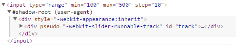

Specification to use new types of DOM elements in a document and extend
There are already custom elements shipped with HTML5
<video> <figure> <article> <header> <aside> <nav> ...
1. Define new HTML elements.
2. Bundle together custom functionality into a single tag.
3. Extend other elements.
4. Extend the API of other DOM elements.
The tag name must have a dash
The custom element extend a Type Extension Custom Element.
To define a type extension element you need to pass registerElement()
createdCallback() - Called every time a custom element is created.
attachedCallback() - Called when the element is attached to the DOM.
detachedCallback() - Called when the element is removed from the DOM.
attributeChangedCallback() - Called whenever one of the elements' attributes changes.
Browser support could be improved with the use of polyfills
Shadow DOM refers to the browser's ability to include a subtree of DOM elements into the rendering of a document.
This allows developers to encapsulate their HTML, styles and script into a single component.
Inspecting the element with Shadow Dom activated from dev tools.
We can see the HTML markup for all rendered elements, inside the input's shadow root.
Browser support could be improved with the use of polyfills
The <template> element is used to declare fragments of HTML that can be cloned and inserted in the DOM by script.
They're an ideal placeholder for declaring the structure of a custom element.
Defining a new template for a custom element
Appending the template to the shadow root of a custom element.
Inside the connectedCallback(), we generate deep copies of the template
Browser support could be improved with the use of polyfills
HTML Imports allow you to load resources inside HTML documents as an aggregated HTML file.
HTML Imports will immediately load the imported document, resolve subresources and execute JavaScript, if any.
Browser support could be improved with the use of polyfills
Piece of code (or plugin) that provides the technology that you, the developer, expect the browser to provide natively.
webcomponents.js is a set of polyfills built on top of the Web Components specifications.
It makes it possible for developers to use these standards today across all modern browsers.
Polymer
X-Tag
Bosonic
SkateJs
WebComponents.org aims to make it easy to share and discover reusable web UI components.